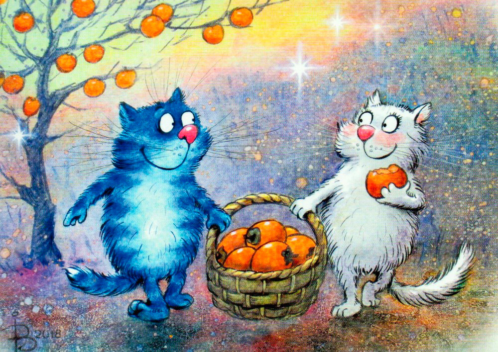
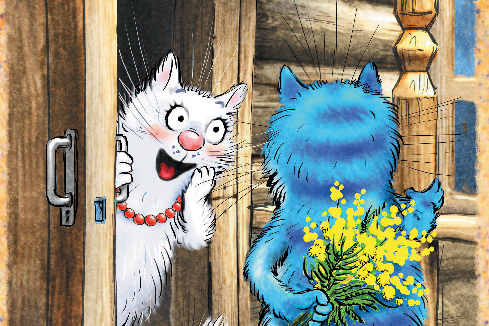
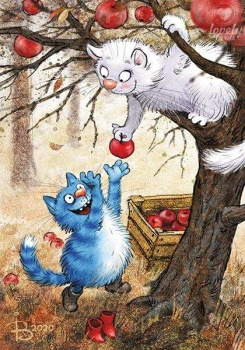
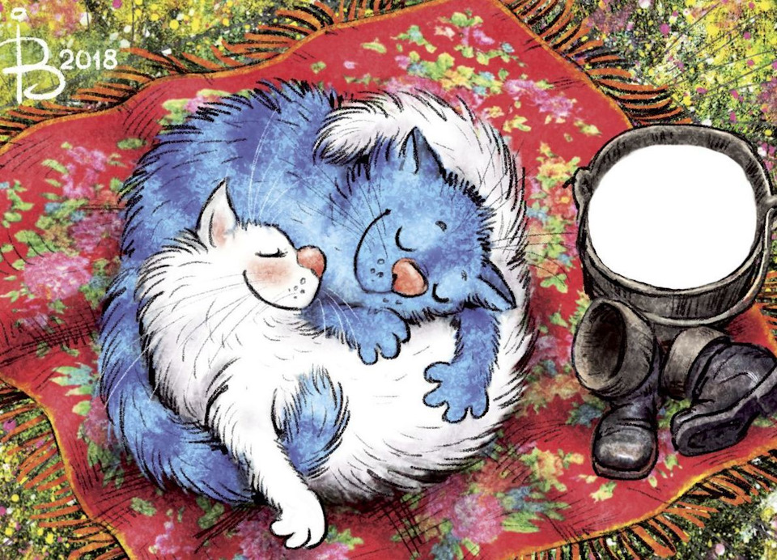

Язык любви № 1: Слова
Простые искренние слова поддержки и похвалы — это то, чего не хватает многим из нас. Люди, которых недостаточно хвалили в детстве, испытывают острую потребность в том, чтобы их партнер не просто ценил и уважал их, но и умел открыто об этом сказать. Кроме того, все мы время от времени сомневаемся в себе, в том, сможем ли достичь успеха. Слова поддержки от близкого человека способны ободрить и придать уверенности, подтолкнуть к тому, чтобы начать делать то, чего нам хочется, но для чего у нас пока не хватает смелости.
Совет: Если этот язык для вас чужой и вы не отличаетесь красноречием, но вам кажется, что именно на нем говорит ваш партнер, обращайте пристальное внимание на то, что говорят люди вокруг вас. Вы слышите, как ваш друг сделал комплимент своей супруге, — запоминайте, начальник оценил по достоинству ваши заслуги и похвалил — слушайте, какие слова он для этого использовал, герои в кино признаются друг другу в любви — это тоже может лечь в копилку вашего словаря для любимого человека.
Бонус: Когда нам говорят приятные слова, отмечают наши успехи, мы испытываем благодарность и, весьма вероятно, будем готовы сделать для партнера что-то приятное в ответ.

Язык любви № 2: Время
Проводить с кем-то время — значит уделять ему полностью свое внимание. Время — ценнейший ресурс, когда мы безвозмездно отдаем его другому человеку, мы вместе с этим дарим частичку своей жизни, себя самого. Быть вместе и быть рядом — разные вещи. Вместе — это смотреть друг на друга, разговаривать, слышать, понимать. Сидеть рядом на диване и смотреть телевизор — это совсем не то, как и разговаривать за завтраком, параллельно читая газету или уткнувшись в свой компьютер.
Совет: Когда вы вместе проводите время, смотрите партнеру прямо в глаза, это позволит установить контакт и передать ощущение, что вы действительно готовы слышать и понимать. Не отвлекайтесь на свои дела и телефонные звонки, отложите их на некоторое время или уладьте их предварительно. Учитесь не перебивать. Вместо этого наблюдайте за партнером, его мимикой, интонациями, жестами, это позволит вам лучше почувствовать его. Сделайте над собой усилие и попробуйте разделить увлечения своего партнера. Вы любите рок, а ваш партнер обожает классику? Что ж, сходите вместе с ним на концерт, даже если детские воспоминания о музыкальной школе вызывают у вас оторопь. Возможно, вы никогда так и не научитесь отличать симфонию от арии, но зато вы научитесь любить своего партнера.
Бонус: Когда вы чем-то занимаетесь со своим партнером, у вас появляются общие воспоминания. А они, в свою очередь, могут стать неисчерпаемым источником радости и помочь скрепить союз.

Язык любви № 3: Подарки
Если любить — значит отдавать, то подарки как нельзя лучше подходят под это определение. Подарок — это зримое воплощение любви. Пожалуй, этот язык один из самых простых, и научиться ему не так уж сложно. Подарки можно покупать, мастерить своими руками, важно, чтобы в процессе вы думали о человеке и выбирали то, что, как вам кажется, может его порадовать.
Совет: Материальные затраты — далеко не основное в этом языке любви. Подарок должен соответствовать вашему финансовому уровню, но не более того. Кроме того, трогательный подарок всегда можно сделать своими руками. Если вы совсем не знаете, что подарить близкому человеку, вы можете воспользоваться советами его друзей или родственников, и в этом нет ничего зазорного, ведь то, чего вы хотите, — сделать приятное, показать свою любовь таким образом, чтобы она была понятна.
Бонус: Подарок — это то, что остается у человека как минимум на какое-то время. Подарок — это ваша воплощенная мысль или чувство, о которых человек еще долго будет думать: «Она помнит обо мне» или «Он думал обо мне, когда выбирал этот подарок». Глядя на этот подарок или беря его в руки, ваш партнер будет вспоминать о вас с благодарностью и любовью. Таким образом, сделанный вами подарок бумерангом вернет вам ваши чувства, усилив их благодарностью вашего партнера.

Язык любви № 4: Помощь
Помогать — это делать что-то для другого человека, выражать свою заботу в действии. Жена готовит ужин, убирается в доме, муж покупает продукты и помогает разобраться с машиной жены, когда возникают проблемы. Это взаимообмен, который вполне может укрепить союз. Помощь требует сил и времени. Если вы с радостью помогаете своему партнеру, вы выражаете тем самым свою любовь.
Совет: Если вы чувствуете, что ваш партнер постоянно раздражен, предъявляет вам претензии и, вероятно, его язык любви — это помощь, попросите его составить конкретный список дел из четырех пунктов, которые он хотел бы получать от вас. Как правило, эти пункты довольно просты: убирать кровать, не разбрасывать носки, помыть машину или иногда убрать посуду. В течение двух месяцев постарайтесь выполнять эти пункты, помня, что вы делаете это из своей любви к вашему спутнику, и, поверьте, результаты не заставят себя ждать.
Бонус: Даже если язык помощи — не ваш язык любви, время от времени усталость от работы и повседневных дел, вероятно, знакома и вам. Если ваш партнер говорит именно на этом языке и вам удалось тоже его освоить, то в те моменты, когда вы будете чувствовать себя разбитым и измотанным, вы неожиданно обнаружите, что рядом с вами находится самый чуткий помощник, который с благодарностью отплатит вам той же монетой, взяв на себя часть ваших обязательств.

Язык любви № 5: Прикосновения
Через прикосновения можно выразить множество оттенков своих чувств: от нежности, заботы, ласки до страстного желания, — и для некоторых это единственный способ почувствовать любовь. Тактильные рецепторы расположены по всему телу, что придает этому языку множество нюансов и возможностей: любое ласковое прикосновение способно сказать о любви, в то время как даже небольшая грубость или неаккуратность может быть истолкована как глубочайшее оскорбление. Людям, говорящим на этом языке, очень важно держать партнера за руку, чувствовать объятия, они с трепетом относятся к поцелуям, придают особое значение сексу и начинают сомневаться, любимы ли они, если не получают их. При этом это не значит, что если вас привлекает интимная сторона отношений, то ваш язык любви — прикосновения. Этот язык любви гораздо шире и богаче.
Совет: Наша душа живет в нашем теле. Прикасаясь к телу партнера, вы прикасаетесь и к его душе. Не бывает двух одинаковых людей, и то, что вызывает приятные ощущения у вас, может совершенно не нравиться вашему партнеру. Прислушивайтесь к нему, исследуйте его тело, относитесь к нему с нежностью и уважением, и тогда это может стать увлекательным процессом для вас обоих. Не ограничивайтесь только сексом и прелюдией. Мимолетные прикосновения в течение дня играют огромную роль, если ваш партнер говорит на языке прикосновений. Положите руку на плечо, когда приносите чашку кофе, приобнимите за талию, проходя мимо, поцелуйте своего спутника, когда садитесь в машину, — и тогда он обязательно будет чувствовать себя любимым.
Бонус: Стоит ли говорить о бонусах, когда речь идет о том, чтобы уделять больше времени и внимания интимной жизни партнеров?
